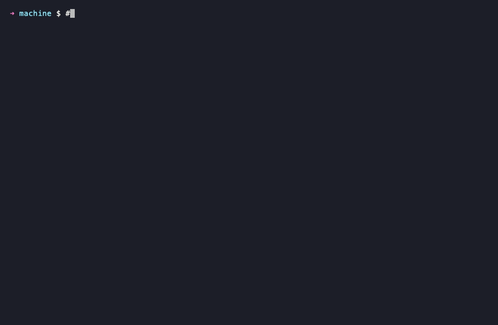

01
Isolated by default.
One VM per project. The blast radius of a bad postinstall script is one VM, not your laptop.
machine up blog
// never run npm install on your machine again
Reproducible, sandboxed Lima VMs for the Claude Code / Codex era. No host filesystem mount. No cross-project bleed. One machine per project.
// section 01 — architecture
Your shell talks to the CLI. The CLI drives Lima. Lima boots a VM per project. Nothing crosses a line that isn't explicitly drawn.
ssh-agent is forwarded into the guest at exec time. The key file never leaves the host.$XDG_RUNTIME_DIR/dev-secrets, a tmpfs that's wiped at shutdown.mountType is disabled. The VM can't read your ~/ or anything else.// section 02 — why bother
One VM per project. The blast radius of a bad postinstall script is one VM, not your laptop.
machine up blog
Check projects.toml and provision.toml into the repo. Your teammate runs up, gets the same box.
machine rebuild blog
Claude Code and Codex ship in the base image, with the official Claude marketplace and a curated plugin set wired up. Point your editor at the SSH host and let them rip.
machine ssh blog
// section 03 — threat model
The point of a VM is the boundary. Here's exactly what crosses it and what doesn't. No vibes — the file path on the right is real.
.envrc$XDG_RUNTIME_DIR/dev-secrets (tmpfs)// section 04 — profiles
Profiles stack. Pick a base, layer extras in provision.toml, or write your own from scratch in 30 lines.
Chrome (or Chromium on arm64), Xvfb, and the lib deps Cypress needs. Node lands from the base image.
The two CLIs you actually use when shipping a backend. Docker comes from the base image.
Modern Python tooling on top of system python3: uv for envs and installs, ruff for lint/format, pyright for types.
rustup with the stable toolchain, installed system-wide so cargo is on PATH for every user.
A pinned Go toolchain from go.dev, dropped into /usr/local/go with go and gofmt on PATH.
A profile is a TOML file and a shell script. Copy any of the above, change three lines, commit it.
// section 05 — demo
A VHS replay of the CLI surface — list, up, ssh. The first up is the slow one; subsequent boots are warm restarts.

// section 06 — lifecycle
Nine commands, no manifesto. Most days you'll use the first two.
$XDG_RUNTIME_DIR/dev-secrets (tmpfs) for this project.projects.toml to ~/.config/machine/ (or to the repo root in dev mode).// section 07 — editors
machine up maintains a sentinel-delimited block in ~/.ssh/config. Cursor and JetBrains Gateway pick it up too.
Install from the Homebrew tap, run machine init, then machine up.
Prefer to clone? git clone the repo — same code, dev mode. Read the formula or verify the release before installing.